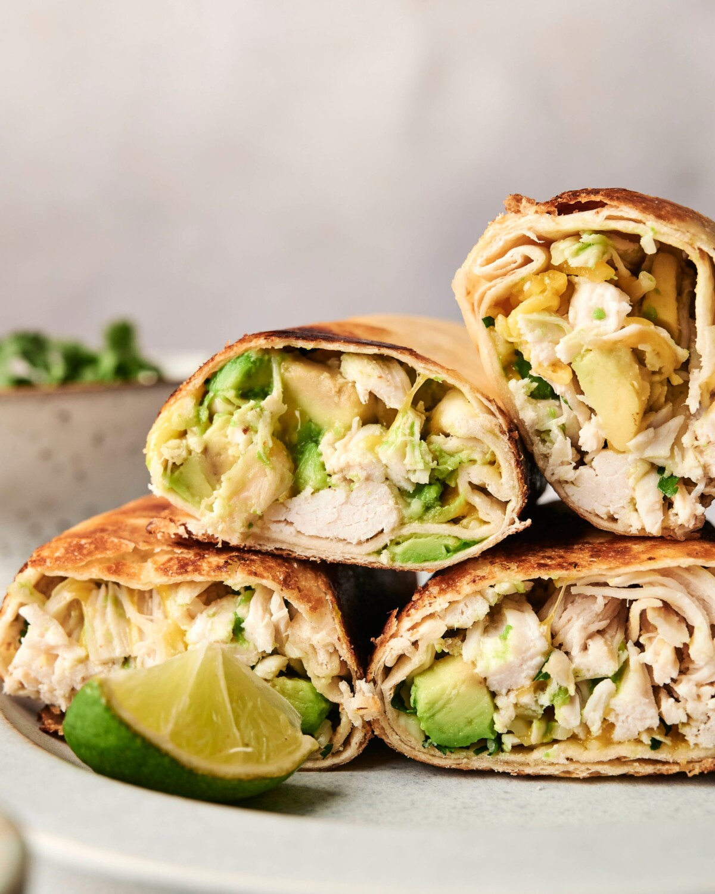

Chicken and Avocado Wrap

Ingredients
Wrap Filling
- 1 1/2 lbs boneless, skinless chicken breast, cut into strips
- 2 tbsp olive oil
- 1/2 tsp garlic powder
- 1/2 tsp smoke paprika
- 1/2 tsp salt and black pepper
- 2 ripe avocados(diced)
- 1 red bell pepper(sliced)
- 3 green onions(sliced)
- 4 large burrito-sized flour tortillas
Zesty Dressing/Sauce
- 3 tbsp fresh lime juice
- 1/2 cup fresh cilantro(chopped)
- 1 pinch salt
Instructions step by step
- Season the chicken: In a bowl, toss the chicken strips with 1 tablespoon of olive oil, garlic powder, smoked paprika, salt, and pepper until well coated.
- Cook the chicken: Heat the remaining 1 tablespoon of olive oil in a large skillet over medium-high heat. Add the chicken and saute for 6-8 minutes, flipping halfway through, until golden brown and cooked through. Transfer to a plate to rest.
- Make the dressing: In a small bowl, whisk together the fresh lime juice, chopped cilantro, and a pinch of salt.
- Tossing the filling: In a large bowl, combine the cooked chicken strips, sliced red bell pepper, and green onions. Pour the dressing over the top and gently toss to coat. Let it rest for 5 minutes so the flavors meld.
- Add avocado: Just before assembling, gently fold the diced avocados into the chicken mixture so they stay intact.
- Roll and serve: Warm the tortillas in a dry skillet or microwave for 10 seconds to make them pliable. Spoon the filling down the center of each tortilla, fold in the sides, and roll tightly from the bottom up. Slice diagonally and serve warm.
Back to main page